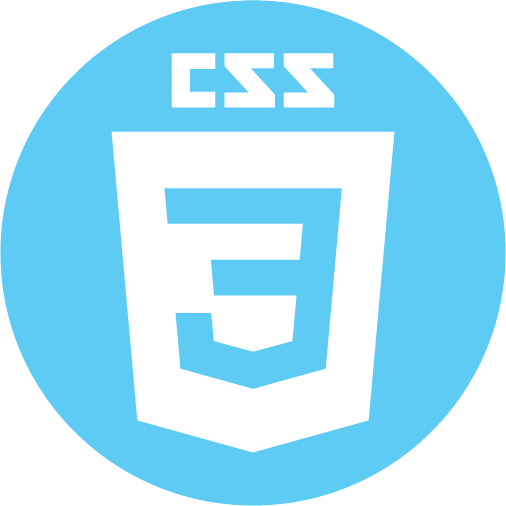
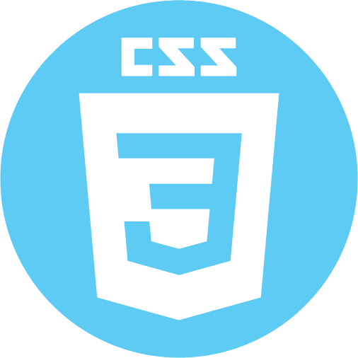
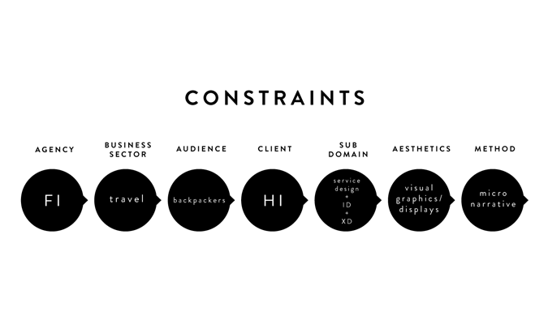
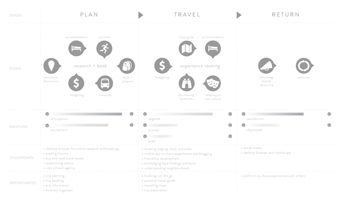
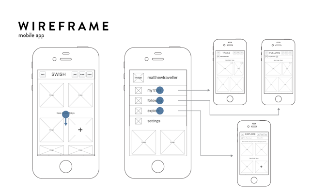
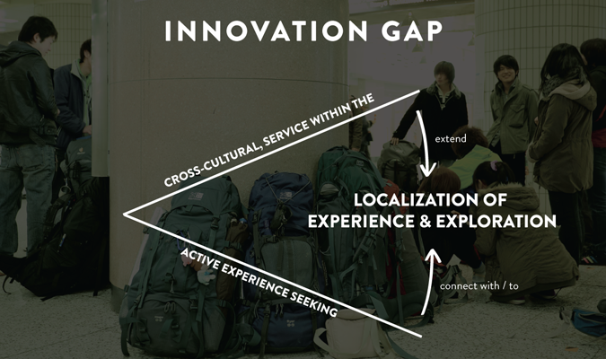
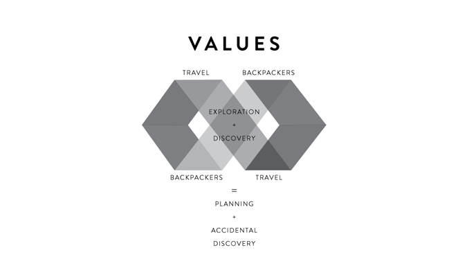

Type
School project
Role
Interaction Designer
Experience Designer
Infographics
Project Manager
Multimedia
Software


 

Team
Soojin Lee
Yan Yao Li
Adam Lin
Yee Loong Ooi
Objective
To create a digital application for backpackers to use as a starting point of trip exploration for them to stumble upon a localized experience through accidental discovery during their travel.
Process
The start of the project consists of studying the digital agency of Fi (Fantasy Interactive) and translating from their design process into ours. With further discussion, the team chose to conduct a project based on travelling where the organization of Hostelling International and target audience of backpackers were chosen. After visiting a local hostel from the organization, we gained further insights and I began to create a journey framework to map out touchpoints that the team can look into. Next, I created wireframes using Axure to demonstrate the interactions that can occur and where visuals should be placed for the final mobile interface.
- 
- 
- 
Result
As a reflection, this project has allowed me to extend my software tools, especially in the domain of interaction design and experience design by creating a project for a true client.
- 
- 